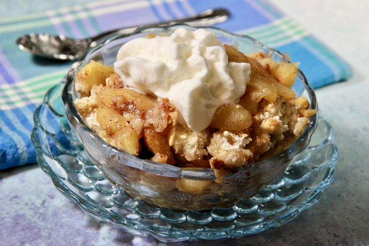

Home
Easy Apple Cobbler
From Elaine at AllRecipes

Easy Apple Cobbler
It's easy. It's apples. It's cobbler. Serve it warm with a scoop of premium vanilla ice cream for a perfect treat on a cold day.
Ingredients
- 3 tablespoons white sugar
- 1 teaspoon ground cinnamon
- 6 large Granny Smith apples - peeled, cored and sliced
- 1 cup all-purpose flour
- 1 cup white sugar
- 1 large egg
- 1 large egg
- 1/4 cup water
Steps
- Preheat the oven to 350 degrees F.
- Combine 3 tablespoons sugar and cinnamon in a bowl.
- Layer apples in an ungreased 9x13-inch baking pan, sprinkling each layer with cinnamon-sugar mixture.
- Combine flour, 1 cup sugar, egg, and baking powder with a fork. Sprinkle over apples in the baking pan. Lightly sprinkle water over top.
- Bake in the preheated oven until topping is golden brown, about 30 minutes.